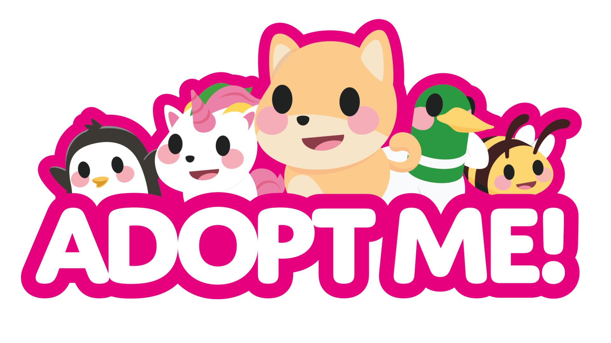
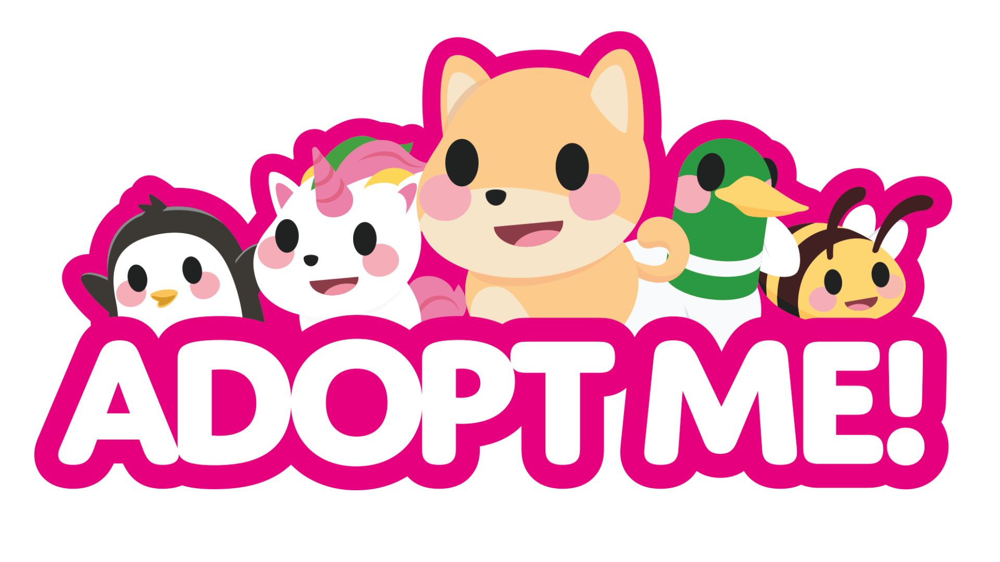
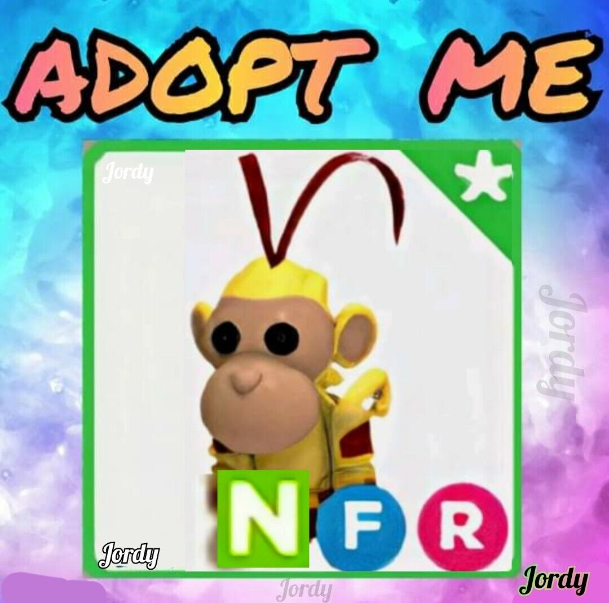
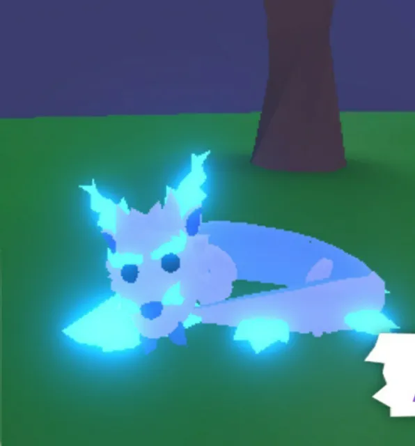

what can you do?
Adopt Me can be an enjoyable game on Roblox. You can use it for roleplaying, building, designing, and trading in-game items. However, Adopt Me players can be pros or new players. A lot of new players don't really know how to play and need a little guidance. Adopt Me! is a massive multiplayer online game on the gaming platform Roblox. The original focus of the game was to adopt children. The game was developed further, and its focus is now on collecting pets. Adopt Me! has been played 20 billion times as of March 2021.
 

what are the best pets
8 rarest pets in Roblox Adopt Me! 1. Monkey King Monkey King is the rarest pet in Roblox Adopt Me! It is a limited legendary pet that requires three Staff Ingredients (legendary toy) and one Monkey (a rare pet) to be obtained. There is only a 5% chance for the Staff Ingredients to be unlocked through unboxing. 2. 8 rarest pets in Roblox Adopt Me! 2.Frost Fury.Frost Fury is a limited legendary pet in roblox Adopt Me!, which was introduced in December 2020 during the Winter Holiday Event (2020).
 who made adopt me
Uplift Games is a modern, remote-first game studio based in North America and the UK. We develop Adopt Me, the premiere pet adoption game on Roblox (33B+ sessions, 1.92 million record CCU). As well as NewFissy | Roblox Wiki | Fandom DreamCraft is a game development group owned by NewFissy and Bethink known for their games Adopt Me! and Test Server, the former being the most popular Roblox game of all time.


what are the very first pets
The Dog and the Cat are the only pets that can be hatched from the Starter Egg. Since the egg cannot be traded, it cannot be obtained anywhere else in the game if the player already hatched it. Players have to be playing in the adult role to obtain and take care of the Starter Egg.


what are the orders of growing the pets
-Newborn - 3 Tasks. -Junior - 6 Tasks. -Pre-Teen - 11 Tasks. -Teen - 16 Tasks. -Post-Teen - 20 Tasks. -(Full Grown)